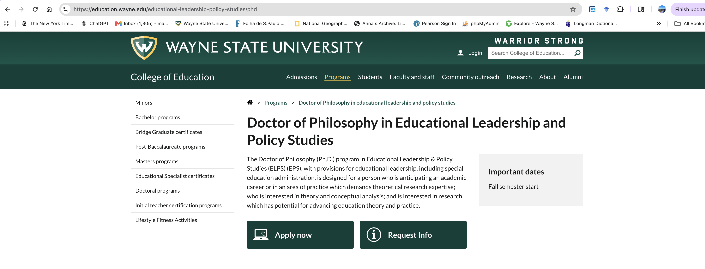
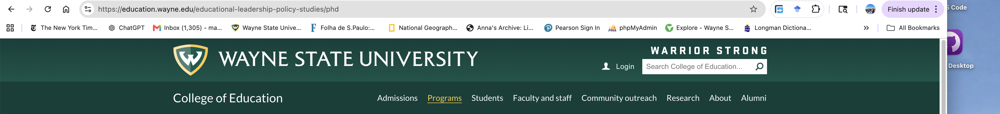
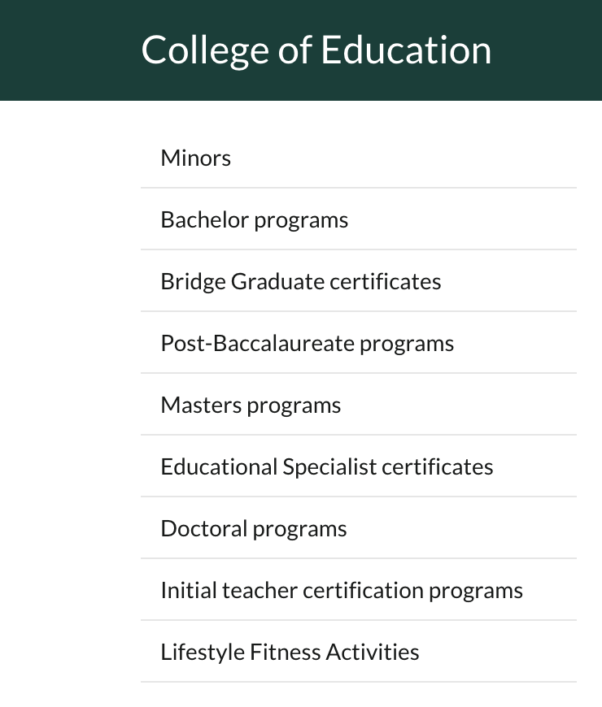
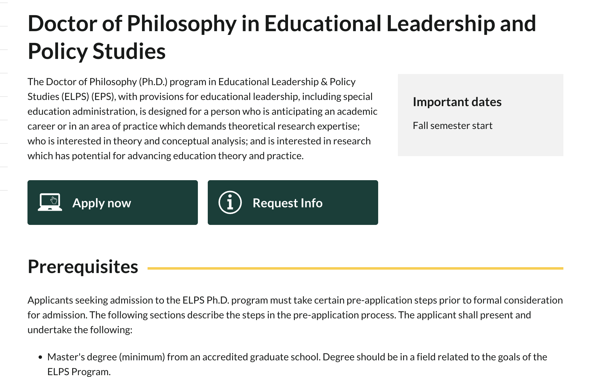
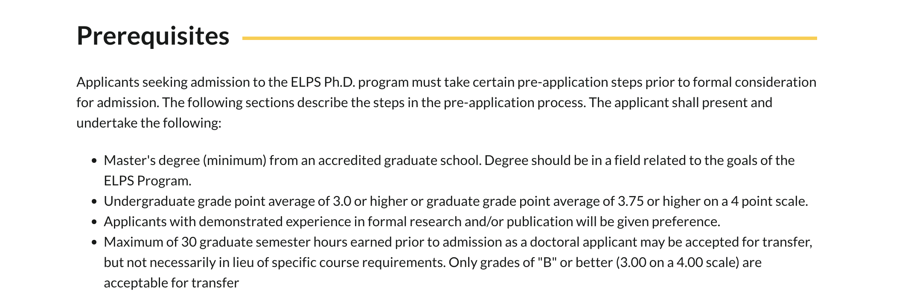
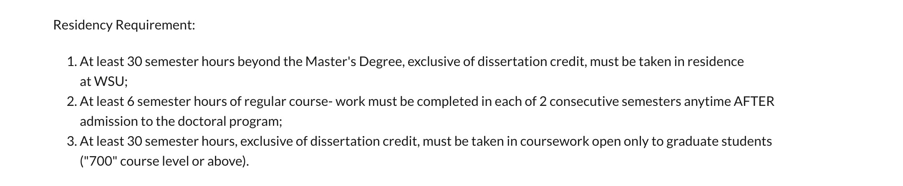
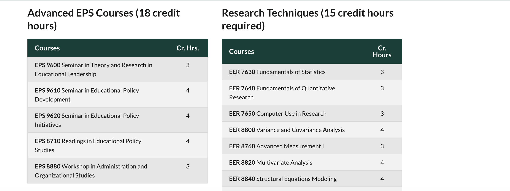
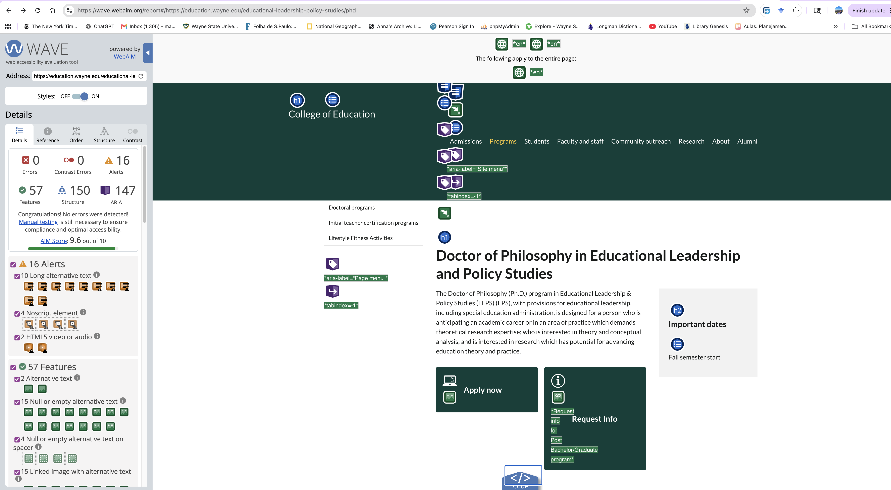
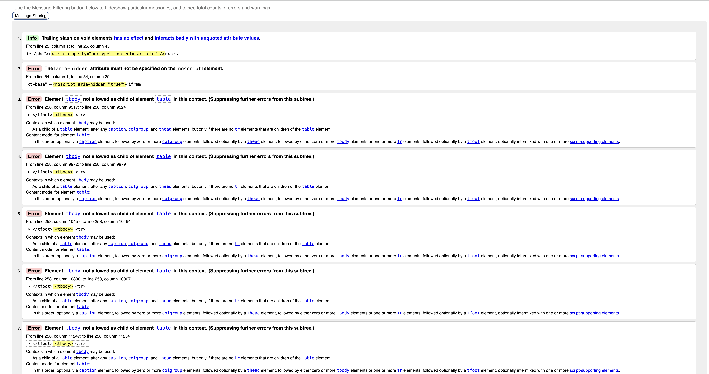

I selected the Wayne State University College of Education page for the
Doctor of Philosophy in Educational Leadership and Policy Studies because
it is a public program page within the wayne.edu domain. The page includes
a clear institutional header, a footer, a main navigation menu with more
than three links, body text describing the program, images and icons, and
multiple list structures. It also contains several visible heading levels,
including the main program title, section headings, and subsection headings.
Because the page meets the minimum structural criteria, it is appropriate
for this research report.

Figure 1. Top of the selected Wayne State University program page.
Step 2: Section-by-Section Layout Analysis
Site Header

Figure 2. The site header identifies Wayne State University and the College of Education.
I would mark this section with the <header> element
because it introduces the website and provides institutional branding.
It contains the Wayne State University identity, the College of Education
label, and utility features such as login and search.
Main Navigation
Figure 3. Main navigation menu for the College of Education site.
I would mark this section with the <nav> element
because it contains the primary navigation links for the College of
Education website. The links allow users to move to major sections such
as Admissions, Programs, Students, Research, and Alumni.
Sidebar Navigation

Figure 4. Sidebar navigation for program categories.
I would also mark this section with the <nav> element
because it provides navigation within the program area of the site.
Unlike the main navigation, this menu is more specific to program
categories, such as bachelor, master, and doctoral programs.
Primary Content

Figure 5. Primary content area for the doctoral program page.
I would mark this section with <main> because it
contains the central content unique to this page. The program title,
description, call-to-action buttons, important dates, and requirements
are the main reason a visitor would open this page.
Page Footer
Figure 6. Footer with College of Education contact information and institutional links.
I would mark this section with the <footer> element
because it closes the page and provides site-wide supporting information.
It includes contact information, social media links, policy links, and
copyright information.
Step 3: Heading Hierarchy
The page uses a clear visual heading hierarchy. The program title functions
as the main page heading, broad content areas function as second-level
headings, and more specific subsections function as third-level headings.
Heading text
Recommended level
Justification
Doctor of Philosophy in Educational Leadership and Policy Studies
H1
This is the main title of the page and identifies the specific program.
Prerequisites
H2
This begins a major content section about admission prerequisites.
Application Procedures
H2
This begins a major section explaining how applicants proceed through the application
process.
Post-Admission Procedures
H2
This begins a major section about requirements after admission.
Course Requirements
H2
This introduces a major section describing required coursework.
Advanced EPS Courses (18 credit hours)
H3
This is a subsection under Course Requirements and identifies one group of required courses.
Research Techniques (15 credit hours required)
H3
This is another subsection under Course Requirements.
Curriculum
H2
This introduces a major section showing the program sequence by semester.
Fall semester I
H3
This is a subsection within the Curriculum section.
Winter semester II
H3
This is another semester-level subsection within the Curriculum section.
Contact
H2
This begins the final major content section with contact information.
The selected headings show a clear three-level hierarchy: the program title
functions as the main heading, major content areas function as second-level
headings, and course or semester subsections function as third-level headings.
Step 4: Lists
Sidebar Program Navigation List
Figure 7. Sidebar navigation list.
This should be marked up as an unordered list using
<ul> because the program categories do not need to
be read in a strict sequence. The list items are links, and each item
takes the user to another program category page.
Prerequisites List

Figure 8. Unordered list of prerequisites.
This should be marked up as an unordered list using
<ul> because the requirements are related items but
are not presented as numbered steps. The list items are plain text.
Residency Requirement List

Figure 9. Ordered list of residency requirements.
This should be marked up as an ordered list using
<ol> because the items are displayed numerically.
The list items are plain text and describe specific residency
requirements.
Step 5: Link Analysis
The page contains both internal and external links. Internal links stay
within the wayne.edu domain, while external links go to a different domain.
I checked the visible navigation and footer links rather than guessing the
URLs.
Internal link examples
Programs
— This is an internal link because it stays within the education.wayne.edu
domain. It leads to the College of Education academic programs and career
paths page.
Students
— This is an internal link because it stays within the education.wayne.edu
domain. It leads to the College of Education students section.
Research
— This is an internal link because it stays within the education.wayne.edu
domain. It leads to the College of Education research section.
I would expect these external social media links to open in a new tab because
they take users away from the Wayne State University website. Opening them in
a new tab allows the original program page to remain available while users
visit the social media site. The page uses recognizable social media icons as
visual indicators, but it does not provide a visible text label next to each
icon in the footer. Clear accessible names are important so that screen-reader
users can understand each social media destination.
Step 6: Tables

Figure 10. Course requirements table.
The page contains data tables that present course requirements and credit
hours. The table structure is appropriate because the information is
tabular: each row represents a course, and the columns identify the course
name and the number of credit hours. The column labels, such as Courses
and Cr. Hrs., should be marked up as <th> header cells
so screen readers can associate each data cell with the correct column.
Step 7: Accessibility Review

Figure 11. WAVE accessibility results for the selected Wayne State University page.
I tested the selected page using the WAVE accessibility tool. WAVE reported
0 errors, 0 contrast errors, and 16 alerts. The page also showed 57
features, 150 structural elements, and 147 ARIA items.
The most significant alert was long alternative text, which appeared 10
times. This does not necessarily mean that the images are missing
alternative text, but it suggests that some alternative text may be longer
than necessary. Long alt text can make screen-reader output inefficient,
especially when it repeats information that is already visible nearby.
WAVE also reported 2 HTML5 video or audio alerts. These should be reviewed
manually because meaningful multimedia content may require captions,
transcripts, or accessible controls.
The page's key visual elements appear to have accessible names or
alternative text. For example, the Wayne State University logo in the header
is implemented as an SVG and uses an ARIA label reference that identifies it
as "Wayne State University." One specific improvement would be to review
and shorten the long alternative text instances so that each image has
concise, purpose-focused alt text.
Step 8: HTML Validation

Figure 12. W3C HTML Validator results for the selected Wayne State University page.
I tested the selected Wayne State University page using the W3C HTML
Validator. Based on the validator output, the page reported 11 errors,
0 warnings, and 2 informational messages. The informational messages were
about trailing slashes on void elements, which do not count as validation
errors.
One error reported by the validator was that the aria-hidden
attribute must not be specified on the <noscript> element.
In plain language, this means that the page is using an ARIA accessibility
attribute on an element where that attribute is not allowed. This matters
because invalid ARIA usage can make the page structure less reliable for
browsers and assistive technologies.
The validator also reported repeated table-structure errors involving
<tbody> elements. In plain language, this means that some
table sections appear in an invalid order or in an invalid location inside the
table markup. Because the page uses tables to present course and credit-hour
data, valid table structure is important for both standards compliance and
accessibility.
One specific improvement would be for the site owner to remove
aria-hidden from the <noscript> element and
review the course tables so that each table uses a valid structure with
<thead>, <tbody>, and
<tfoot> in the correct order. This would make the HTML
more standards-compliant and easier for assistive technologies to interpret.
Step 9: Summary
Overall, the selected Wayne State University page is well organized and
provides a clear path for users who want information about the doctoral
program. The page has a recognizable header, multiple navigation areas, a main
content region, structured lists, data tables, and a clear footer. The strongest
part of the page is its content organization because users can quickly find the
program title, requirements, curriculum information, and contact details. The
most significant issues found during the review were the long alternative text
alerts in WAVE and the HTML validation errors related to ARIA and table
structure. The improvement with the biggest positive impact would be to review
all non-text content and table markup so the page is both more accessible and
more standards-compliant.